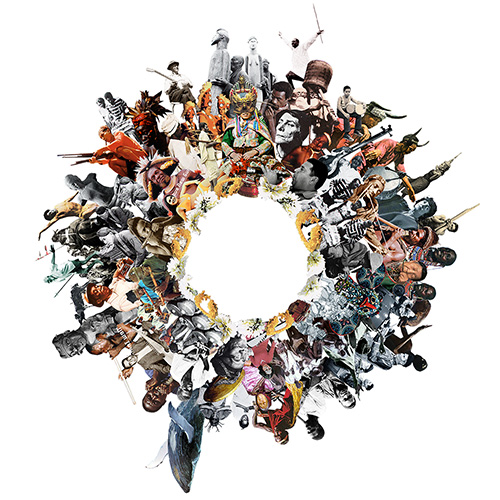

Toggle navigation
Songs
Albums
News

antropoloops
Proyecto de remezcla de fragmentos de músicas tradicionales de todo el mundo para crear nuevos collages musicales.
Proyecto de remezcla de fragmentos de músicas tradicionales de todo el mundo para crear nuevos collages musicales.